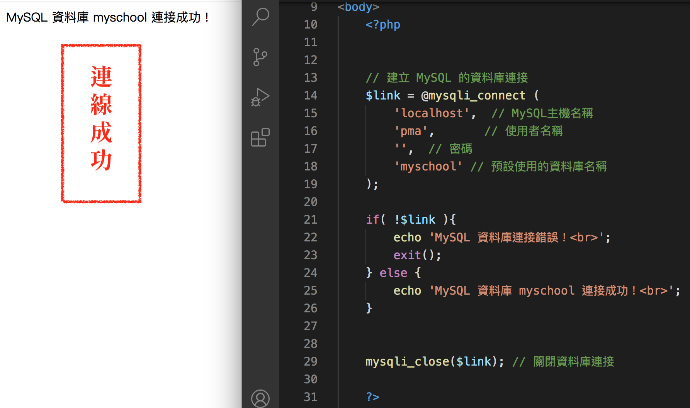

PHP
資料庫 -
- 資料庫（Database）是一種資料儲存單位，一些經過組織的資料集合，眾多出勤管理系統、倉庫管理系統、進銷存系統或小至錄影帶店管理系統，這些應用程式都屬於不同應用的資料庫系統。
- 資料庫系統是由資料庫和資料庫管理系統所組成，資料庫管理系統是一套管理資料庫的應用程式。
- 關聯式資料庫系統（Relational Database System）是目前資料庫系統的主流。（ex:MySQL）
- 使用者下達 SQL 結構化查詢語言，透過資料庫管理系統來儲存和管理資料庫儲存的資料。開發資料庫系統就是在設計資料庫、建立應用程式使用介面和決策架構，針對需求設計資料庫，資料庫管理系統本身只負責管理和存取資料庫，作為應用系統的資料來源。
關聯式資料庫 -
- 由一個或多個資料表所組成
- 多個資料表間使用欄位的資料值來建立連接，以便實作資料表間的關聯性
- 資料表需要選擇「主鍵」（Primary Key），這是用來識別資料表唯一記錄的欄位資料
- 資料庫儲存資料的目的是為了提昇排序和查詢效率，在資料表可以使用「索引」（Index）將資料系統化整理，以便在大量記錄中快速找到記錄或進行排序
PRIMARY Key (PK) (主鍵)
- index 但不能為空值 (NULL)，PK 會自動建立 index 每個 table 只能有一個 PRIMARY Key（建議）
- index 建立會占用儲存空間，資料增刪修時會異動。欄位長度是越短越好
在 PHP 程式是呼叫 mysqli_connect() 函數來開啟與建立MySQL 資料庫連接，如下所示：
在 PHP 程式是呼叫 mysqli_close() 函數來關閉 MySQL 資料庫連接和釋放資料庫連接資源佔用的記憶體空間，如下所示：
在 React 學 php 連資料庫時總是霧煞煞，今天用簡單的程式連接就很清楚了！
PHP 在成功開啟資料庫連接後，就可以呼叫 mysqli_query() 函數執行 SQL 指令的資料表查詢，如下所示：
在取得結果物件後，就可以呼叫相關函數取出記錄資料或將記錄資料儲存成陣列。我們可以呼叫 mysqli_fetch_assoc() 函數將查詢結果的每一筆記錄存入結合陣列，如下所示：
資料表查詢結果的結果物件會佔用伺服器的記憶體空間，當不再需要結果物件時，請記得自行釋放佔用的記憶體空間，以免浪費伺服器的寶貴資源。
PHP 是呼叫 mysqli_free_result() 函數釋放結果物件 ($result) 佔用的記憶體空間，如下所示：